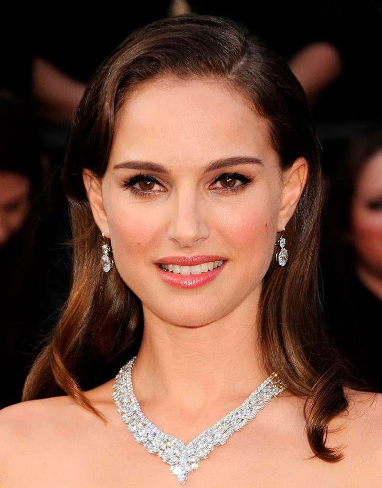
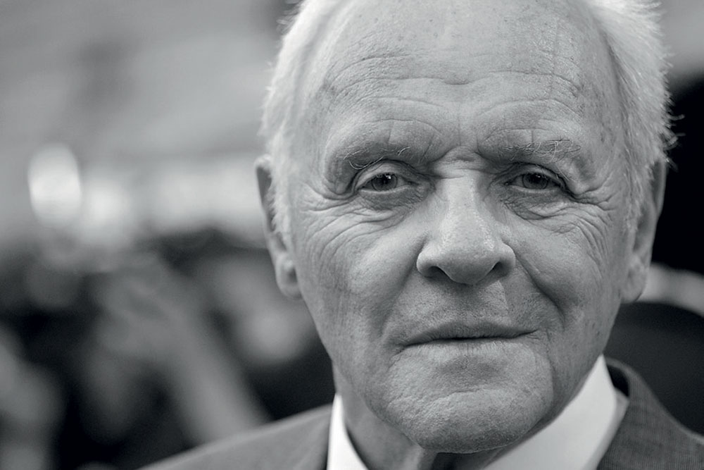

| Name | Photo | Film | More Information |
|---|---|---|---|
| Keanu Reeves | "Constantine" | See details | |
| Leonardo DiCaprio |

|
"The Great Gatsby" | See details |
| Jack Nicholson | "As Good as It Gets" | See details | |
| Natalie Portman |  | "The Other Boleyn Girl" | See details |
| Morgan Freeman | "The Bucket List" | See details | |
| Anthony Hopkins |  | "Solace" | See details |